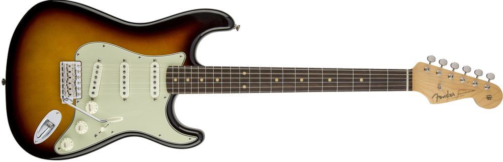

스트라토 캐스터
펜더 스트라토캐스터(Fender Stratocaster)는 펜더사의 일렉트릭 기타 제품중 하나인 스트라토캐스터, 텔레캐스터와 함께 펜더에서 가장 유명한 양대 제품이다. 줄여서 스트랫이라고도 부른다. 1954년에 처음 등장하였다. 세계에서 가장 알려져 있는 기타 중 하나로서, 일반인들이 '일렉트릭 기타' 라고 하면 가장 먼저 떠올리는 이미지 중 하나가 바로 이 기타이다. 흔히 말하는 미펜, 일펜, 멕펜에 모델명이 생략되었다면 이 스트라토캐스터를 칭하는 것이다. 스트라토캐스터보다도 먼저 생산된 시초인 모델인 텔레캐스터와 재즈마스터 등등 훌륭한 라인업이 쟁쟁한데도 불구하고 펜더의 마스코트는 스트라토캐스터가 되었다. 특유의 톤 때문에 지미 헨드릭스등을 비롯한 수많은 거장과 전설등이 50년 이상 스트랫을 애용했기 때문이다. 예를 들어 에릭 클랩튼, 지미 헨드릭스, 스티비 레이본, 리치 블랙모어, 로버트 크레이, 키스 리처즈 같은 뮤지션들이 사용한다. 스트라토캐스터는 범용성이 뛰어난 기타로, 대부분의 스타일에 사용된다. 컨트리, 레게, 록, 팝, 포크, R&B, 블루스, 재즈, 펑크, 헤비메탈 등 많은 장르에서 널리 쓰인다.[1]